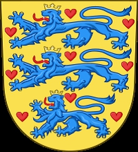

1502382 Erik Sjællandsfar
* omkring 1344
† före 1380
Riddare
Blev ca 35 år

3004764 Kung Valdemar IV Atterdag
* 1320 Tikøb, Fredriksborg, Danmark
† 1375-10-24 Gurre slott, Helsingör, Danmark
Kung av Danmark
Blev högst 55 år